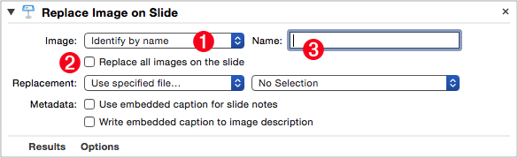
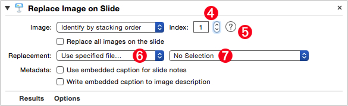
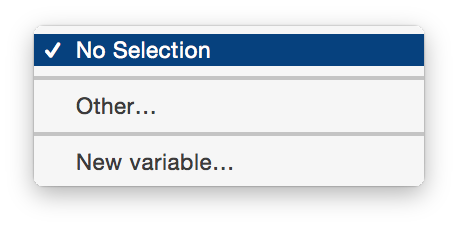
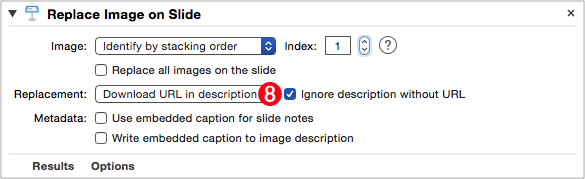
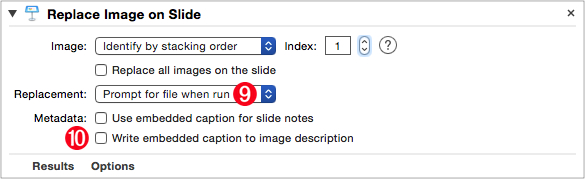
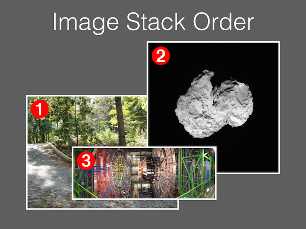
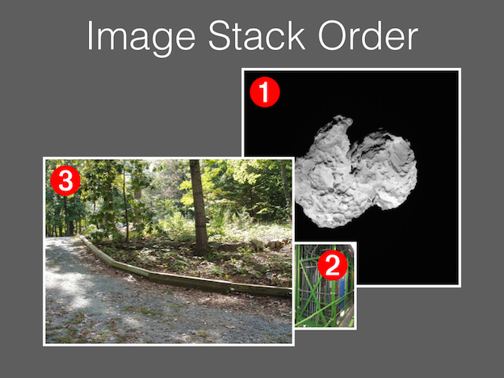
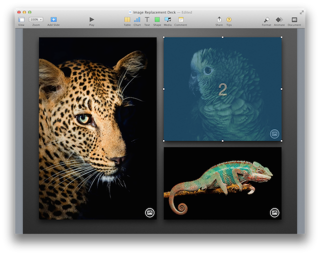

The “Replace Image on Slide” Automator action is used to replace a placeholder image with an image file.
The Action Information
| Input: | AppleScript reference(s) to the slide(s) containing the image(s) to replace |
| Output: | AppleScript reference(s) to the slide(s) containig the image(s) that were replaced |
| Parameters: | User-settable parameters include:
|
| Note: | Important items to note:
|
| Related: | Other actions that often precede this action:
|
Video Overview
The following video (10:06) demonstrates how to use this Automator action:
The Action Interface
The view for this action is divided into three groups:
- The parameters at the top are used to indicate how the action will identify the images to be replaced.
- The “Replacement” parameter in the middle of the view is used to determine the source of the replacement image(s)
- The parameters at the bottom of the view are used to indicate how any caption data embedded in the replacement images should be used.
Identifying Image(s) to Be Replaced
The first section of the action interface contains controls for identifying the image(s) to be replaced:
(⬇ see below ) The image to be replaced is set be identified by its file name.

1 Image Identification Method • Choose to identify the image to be replaced by name or its position in the stack of images on the slide.
2 Replace All Images • Select to replace all images on the slide. If chosen, the Image Identification Method popup menu 1 becomes disabled.
3 Target Image Name • If “Identify by name” is selected from Image Identification Method popup menu 1 a text input appears for entering the name of the image to be replaced.
(⬇ see below ) The image to be replaced is set be identified by its position in the stacking order of images on the targeted slide(s).

4 Target Image Index • If “Identify by stacking order” is selected from Image Identification Method popup menu 1 a stepper control appears to enter the index of the image to be replaced.
5 Show Stacking Order • Click this button to view the stacking order of the images on the current slide (⬇ see “image stack position” below )
Identifying the Replacement Image
6 Replacement Image • This popup menu offers three options for selecting the replacement image: choose an image file, download an image file from the internet, or be prompted to select an image file when the parent workflow is executed.
7 File Picker Menu • Select “Other…” to summon a file picker dialog, or choose “New Variable…” to create a new Automator workflow variable.

(⬇ see below ) The replacement image is indicated to be located by an HTTP-based URL found in the description field of the image to be replaced.

8 Replace with File from URL • With this option selected, the action will attempt to download the image file whose URL is placed in the image description field in Keynote. Select the adjacent checkbox to ignore any image placeholders without URLs in their description fields.
(⬇ see below ) The replacement image is indicated to be located by prompting the user to locate it within a choose file dialog, when the workflow containing the action is executed.

9 Prompt when Run • Select this option to have the action highlight the image to be replaced and display a file chooser dialog when the parent workflow is executed.
10 Metadata • Select either or both of these options to have the action extract embedded caption metadata from the replacement image file and use that data for the image description or slide presenter notes.
In Keynote, items added to a slide, whether text, images, movies, audio clips, or shapes, occupy their own layer and will be either above or below other items on the slide.
You can identify a specific slide item by referring to it using its numeric position in the “stack” of items on the slide, such as “image 2” or “image 1”. Items “higher” in the stack of slide items have larger numeric indexes than items “lower” in the stack of slide items. The item with the lowest “index” value is always the one at the botton or back of the stack.
When working with images, you can ignore other types of slide items, and refer to a specific image by its position in the stack of images on the slide, rather than its positon in the stack of items on the slide. This action uses this method in identifying a specific image placeholder. To view the image stack position of the images on the currently selected slide, click the Question-Mark button 5 in the action interface (⬇ see below )


(⬆ see above ) As images on a slide are moved forward or backward, their position in the stack of slide images changes. The image on the bottom of the stack always has a stack index of 1.
(⬇ see below ) When the help button in the action interface is pressed, the stack index for each of a slide’s images is momentarily displayed.
